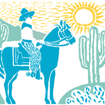

Will Rogers PTA
Todo lo de Rogers a un toque de distancia: inscripciones, recursos escolares y todas las maneras de conectar con nuestra comunidad.
View this page in EnglishPróximamente
- Noche de Libros y Galletasmié. 30 de sept. · 5:30 p. m. · Auditorio
- Read-A-ThonInscríbete y dona hasta el vie. 2 de oct.
- Reunión de la PTAmié. 7 de oct. · 8:30 a. m. · Biblioteca o Zoom
- Noche de Arte Reflectionsvie. 9 de oct. · 5:30 p. m. · Cafetorium
- Fecha límite de ReflectionsEnvía tu obra por correo electrónico a más tardar el vie. 16 de oct.
- Noche de Cine y Fiesta de Estrellasvie. 16 de oct. · 6:30–8:30 p. m.
- Reunión de la PTAmié. 4 de nov. · 8:30 a. m. · Biblioteca o Zoom
- Noche de Adultos y SubastaSubasta del 6 al 14 de nov. · Fiesta el sáb. 14 de nov.
Por ahora no hay nada más en el calendario. Las nuevas fechas se anuncian en el boletín de los miércoles.